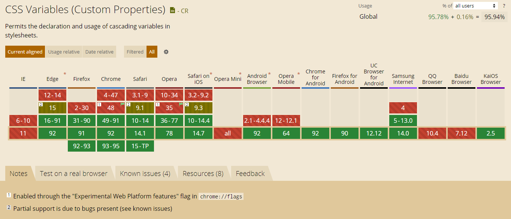
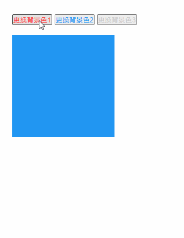

CSS3中的var
概述
CSS3中增加了变量函数var, 当然这些变量在less/sass等css预编译语言中早有实现，CSS标准也已经支持，并且也有着不错的兼容性：

语法
var的标注语法如下
var( <custom-property-name> [, <declaration-value> ]? ) // var( <自定义属性名> [, <默认值 ]? )
代码展示
:root{
--blue:#2196f3;
}
.box{
--size:20px;
background-color: var(--blue);
font-size: var(--size);
}
放在root下即为全局变量，在选择器的声明块内就只在当前块区域有效。
我们利用这个属性实现一个简单的换肤功能，代码如下：
<!-- css部分 -->
<style>
/* 变量全局使用 */
:root{
--blue:#2196f3;
--red:#fc3737;
--grey:#CCC;
--myColor:var(--blue);
}
.content{
padding: 30px;
}
.box{
width: 200px;
height: 200px;
background-color: var(--myColor);
margin-top:20px
}
</style>
<body>
<!-- HTML部分 -->
<div class="content">
<div class="btn-box">
<button class="btn" data-color="red" style="color:var(--red)">更换背景色1</button>
<button class="btn" data-color="blue" style="color:var(--blue)">更换背景色2</button>
<button class="btn" data-color="grey" style="color:var(--grey)">更换背景色3</button>
</div>
<div class="box"></div>
</div>
<script>
const $root= document.querySelector(':root');//document.querySelector(':root') === document.documentElement
const $btnBox= document.querySelector(".btn-box")
$btnBox.addEventListener("click",(e)=>{
const target=e.target;
const color=target.getAttribute("data-color")
if(color){
const colorVal=getComputedStyle($root).getPropertyValue('--'+color)
$root.style.setProperty('--myColor', colorVal);
}
})
</script>
</body>
上述代码中有js检测控制变量的部分，效果如下

其他
空格问题
因为CSS变量的空格尾随特性，也就是每个变量解析完自动追加一个空格
.box{
--border-px:2px;
--size:20;
border:var(--border-px)solid black;
font-size: var(--size)px;
}
等同于
.box{
border:2px solid black;
font-size: 20 px;
}
所以font-size部分的值不会生效，我们可以利用calc函数再进行一次计算
.box{
--border-px:2px;
--size:20;
border:var(--border-px)solid black;
font-size: calc(var(--size) * 1px);
}
默认值问题
对于上述语法中的默认值，有一个非常有意思的一个点：对于CSS变量，只要语法是正确的，就算变量里面的值是个乱七八糟的东西，也是会作为正常的声明解析，如果发现变量值是不合法的，也不会取后面的默认值，会使用该属性的缺省值进行计算：
.box{
--size:#000;
font-size: var(--size,20px);
}
fontSize的值不是20px,而是默认继承了body的默认值，只有当变量–size不存在时，才会得到20px